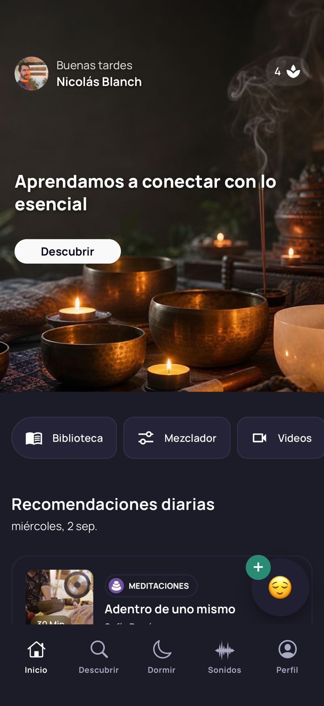
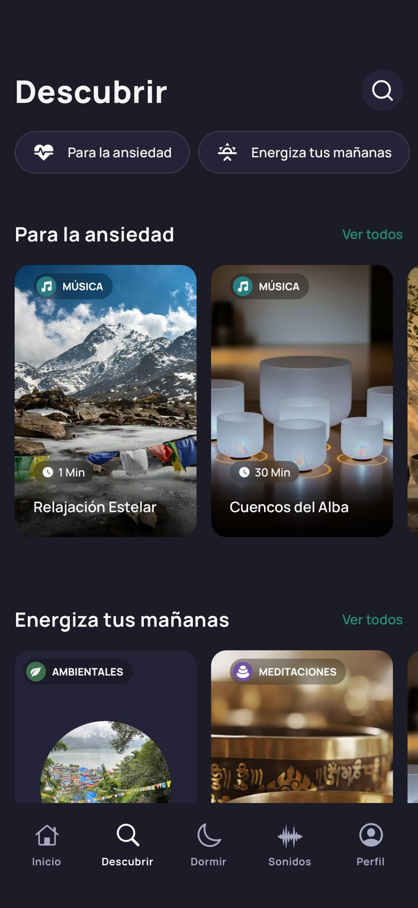
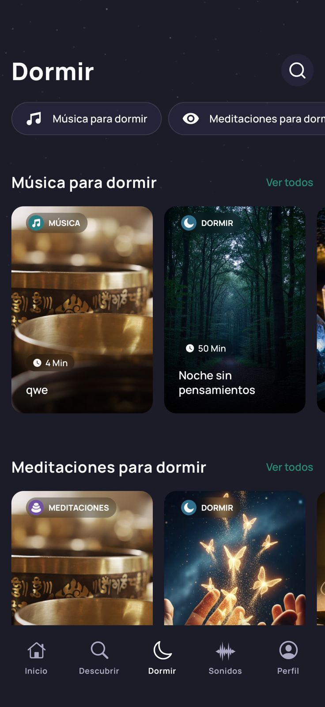
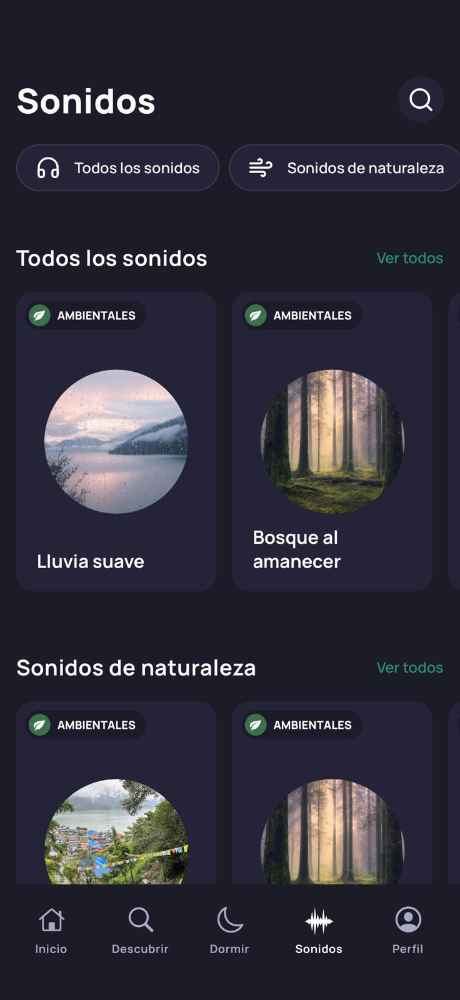
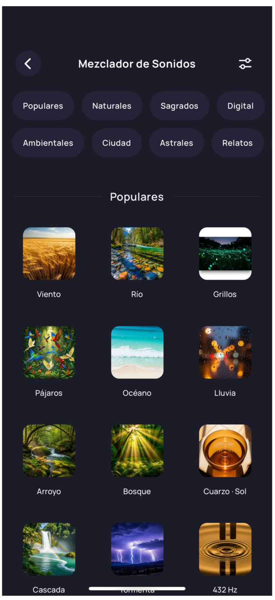
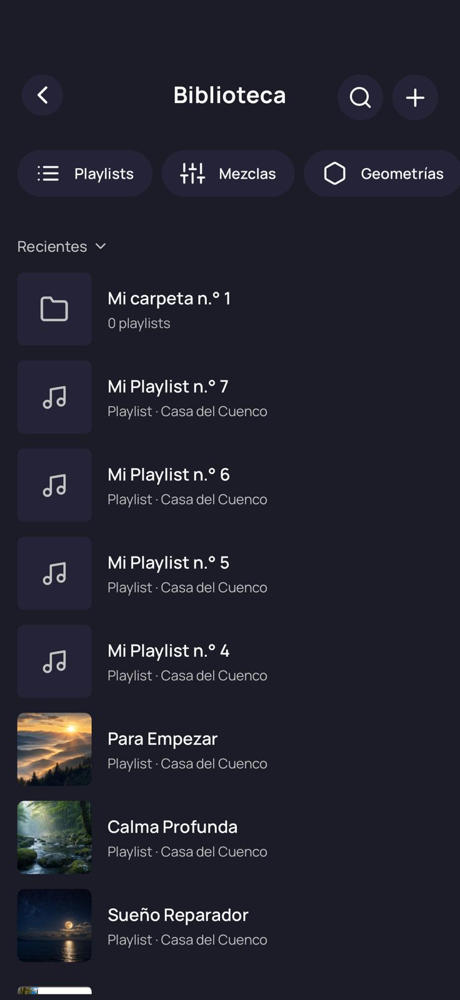
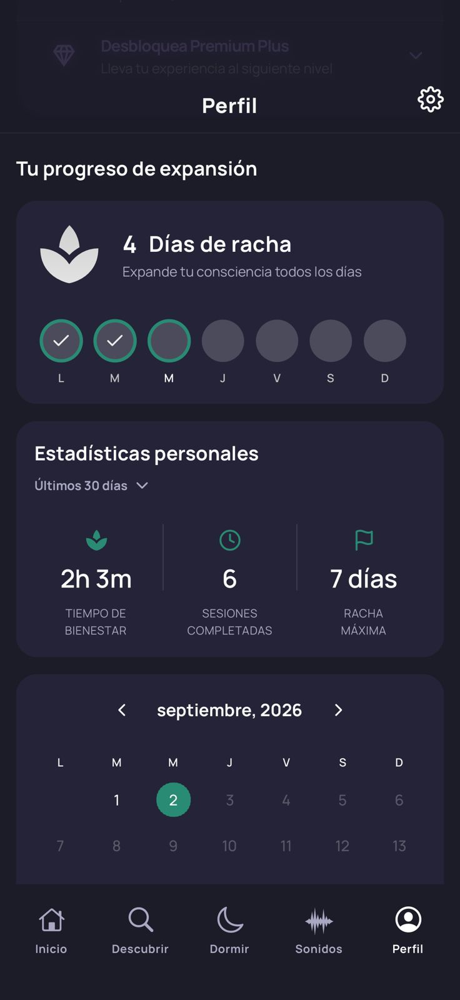

Descubrir
Encontrar una sesión apropiada para el momento, la intención o el estado emocional del usuario.
Casa del Cuenco / Resonancia
Una aplicación de bienestar sonoro para descubrir, escuchar, crear y personalizar experiencias.
Una aplicación de bienestar enfocada en meditación, música, sonidos, descanso y relajación, diseñada para acompañar al usuario en distintos momentos de su día.
La App combina contenido curado, recomendaciones personalizadas, herramientas de creación y experiencias inmersivas, permitiendo que cada usuario descubra, escuche, organice y cree contenido de acuerdo con sus necesidades.
Encontrar una sesión apropiada para el momento, la intención o el estado emocional del usuario.
Acceder a experiencias sonoras diseñadas para acompañar concentración, calma, descanso y conexión.
Combinar sonidos y construir experiencias propias a partir de una biblioteca mezclable.
Organizar contenidos, guardar favoritos y recibir recomendaciones relacionadas con cada momento.
Resonancia entra en la rutina del usuario como una capa sonora que se adapta a su intención, su energía y el momento del día.

El contenido se organiza en cinco categorías principales:
Cada sesión puede tener múltiples etiquetas, temáticas y atributos, que permiten clasificarla y relacionarla con diferentes necesidades del usuario.
Estas etiquetas permiten que un mismo contenido pueda aparecer dinámicamente en diferentes secciones de la App según sus características y relevancia.
La App cuenta con cuatro pantallas principales de navegación:
presenta el contenido más fresco y reciente de la plataforma, junto con novedades y contenidos destacados.

permite explorar el catálogo mediante categorías, etiquetas, colecciones, carruseles y recomendaciones.

concentra contenidos seleccionados para acompañar el descanso y el sueño.

permite explorar experiencias sonoras organizadas por diferentes tipos, temáticas y etiquetas.
La App incorpora herramientas que permiten al usuario personalizar, crear y administrar su experiencia:
Permite indicar cómo se siente el usuario mediante diferentes emojis. A partir de su estado de ánimo, el sistema genera recomendaciones de sesiones relacionadas con ese momento.

Es una experiencia inmersiva donde el usuario puede acceder a una biblioteca de audios mezclables, combinarlos y crear sus propias experiencias sonoras personalizadas, que posteriormente puede guardar.

Es el espacio personal para organizar y acceder al contenido del usuario, incluyendo sus mezclas, playlists, favoritos, contenidos recientes e historial.
La experiencia de reproducción contempla dos tipos de reproductores, adaptados a las diferentes características del contenido.
También existen dos tipos de pantallas de detalle previas al reproductor, desde las cuales el usuario puede conocer la sesión, visualizar su información y decidir si desea comenzar la reproducción.
Flujo principal de consumo
Descubrimiento → Detalle → Reproducción
El Mezclador amplía la app desde el consumo hacia la creación de experiencias sonoras personales.
El usuario puede explorar una biblioteca organizada por categorías, elegir sonidos compatibles y combinarlos para construir una atmósfera propia. La mezcla puede guardarse como una experiencia personal y volver a utilizarse en distintos momentos.
Elegir sonidos, combinarlos y ajustar cada capa según la intención del momento.
Convertir una combinación temporal en una experiencia que puede volver a escucharse.
Descubrir nuevas posibilidades a partir de una biblioteca sonora curada.
Usar sonido y mezcla como una forma de conexión personal.
Cada usuario dispone de un perfil personal, donde puede consultar sus estadísticas, actividad, progreso y recompensas obtenidas por utilizar regularmente la App.

El sistema busca incentivar la constancia y generar una sensación de progreso y evolución personal.
Personas que utilizan la plataforma para descubrir, escuchar, organizar y crear experiencias relacionadas con la meditación, música, sonidos, descanso y bienestar.
Son creadores de contenido que aportan material original a la plataforma. Sus contenidos pasan por un proceso de curaduría, edición y adaptación realizado por nuestro equipo antes de ser publicados.
En conjunto, la App está diseñada alrededor de cuatro acciones principales:
La idea central
La experiencia no termina cuando el usuario reproduce una sesión: continúa cuando la guarda, la incorpora a su práctica, crea algo propio y vuelve a descubrir.
El objetivo es que la App no sea solamente una biblioteca de audios, sino un ecosistema de bienestar sonoro, donde cada usuario pueda encontrar aquello que necesita en cada momento, crear sus propias experiencias y construir una práctica personal a lo largo del tiempo.